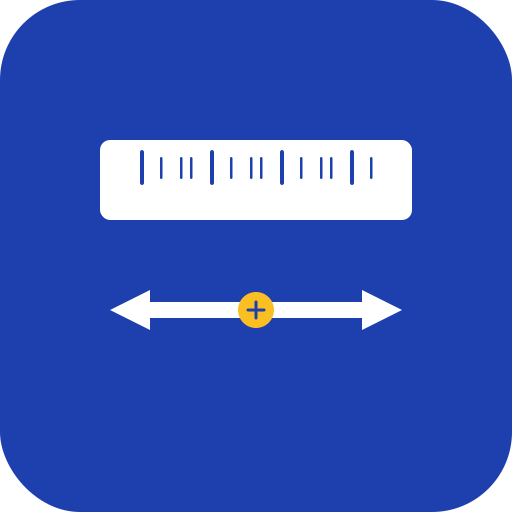
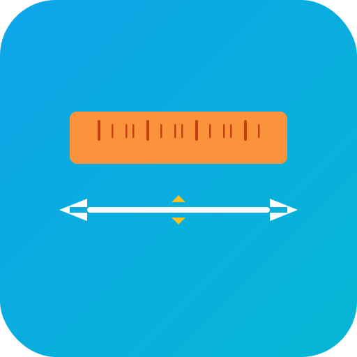
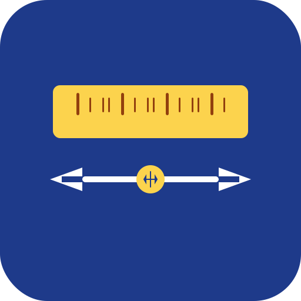

📐 Favicon デザイン案 V2
定規の下に矢印を配置し、「変換」の意味を明確に表現
V2案1: シンプル

128px
32px
16px
特徴
- 濃い青背景に白い定規
- 下部に白い双方向矢印
- 中央に黄色の円で変換シンボル
- クリーンでシンプル
長所
- 視認性が非常に高い
- 定規と矢印の役割が明確
- 小サイズでも認識しやすい
- プロフェッショナルな印象
短所
- やや控えめなデザイン
V2案2: モダンなカーブ矢印
128px
32px
16px
特徴
- 青〜シアングラデーション背景
- 白い定規
- カーブした矢印で循環を表現
- 中央に白い円と変換アイコン
長所
- 循環・変換の意味が明確
- モダンで洗練されている
- 動的な印象
短所
- 小サイズで詳細が失われる可能性
- やや複雑
V2案3: クリーン

128px
32px
16px
特徴
- シアングラデーション背景
- オレンジの定規
- 白い双方向矢印
- 黄色の上下矢印で変換を強調
長所
- 明るく親しみやすい
- 変換の意味が直感的
- バランスの良い配色
- 視認性が高い
短所
- 矢印が多い
V2案4: 太めで明確

128px
32px
16px
特徴
- 濃い青背景に黄色の定規
- 太めの白い双方向矢印
- 中央に黄色い円と回転矢印
- コントラスト強め
長所
- 非常に目立つ
- 小サイズでも認識しやすい
- 変換アイコンが明確
- インパクトがある
短所
- やや主張が強い
V2案5: 上下矢印で交換表現

128px
32px
16px
特徴
- 紫グラデーション背景
- 白い定規
- 右向き（上）と左向き（下）の矢印
- 中央に黄色い円と上下矢印
長所
- 交換・変換の概念が非常に明確
- ユニークなレイアウト
- 視覚的に面白い
短所
- やや複雑
- 小サイズで見づらい可能性
総合比較
| デザイン | 視認性（小） | 視認性（大） | 変換の明確さ | シンプルさ | 推奨度 |
|---|---|---|---|---|---|
| V2案1: シンプル | ⭐⭐⭐⭐⭐ | ⭐⭐⭐⭐⭐ | ⭐⭐⭐⭐ | ⭐⭐⭐⭐⭐ | ⭐⭐⭐⭐⭐ |
| V2案2: モダン | ⭐⭐⭐ | ⭐⭐⭐⭐⭐ | ⭐⭐⭐⭐⭐ | ⭐⭐⭐ | ⭐⭐⭐⭐ |
| V2案3: クリーン | ⭐⭐⭐⭐ | ⭐⭐⭐⭐⭐ | ⭐⭐⭐⭐⭐ | ⭐⭐⭐ | ⭐⭐⭐⭐ |
| V2案4: 太め | ⭐⭐⭐⭐⭐ | ⭐⭐⭐⭐⭐ | ⭐⭐⭐⭐⭐ | ⭐⭐⭐⭐ | ⭐⭐⭐⭐⭐ |
| V2案5: 交換 | ⭐⭐⭐ | ⭐⭐⭐⭐ | ⭐⭐⭐⭐⭐ | ⭐⭐ | ⭐⭐⭐ |
🏆 最推奨: V2案4（太めで明確）
理由:
- あらゆるサイズで優れた視認性
- 中央の回転矢印アイコンで「変換」の意味が非常に明確
- 黄色と青の強いコントラストで目立つ
- 太めのデザインで16pxでも認識しやすい
- プロフェッショナルでありながらフレンドリー
第2推奨: V2案1（シンプル）
理由:
- 最もシンプルで洗練されている
- 全サイズで優れた視認性
- 控えめながら明確なデザイン
- 長期的に飽きにくいデザイン
第3推奨: V2案3（クリーン）
理由:
- 明るく親しみやすい配色
- 変換の意味が直感的
- バランスの取れたデザイン